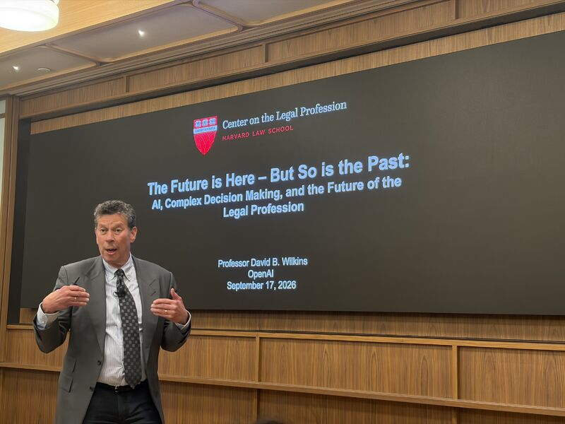

David B. Wilkins and Anthea Roberts in conversation with the legal community about AI, complex decision-making and the future of the profession.

David B. Wilkins at OpenAI’s Astra for Law launch, New York.
Keynote · OpenAI
The Future is Here — But So is the Past
AI, Complex Decision Making, and the Future of the Legal Profession
David B. Wilkins
At OpenAI’s Astra for Law launch in New York, David B. Wilkins explored how AI is restructuring legal services and why judgment, trust and the development of lawyers remain central. Drawing on the joint project with Anthea Roberts, he outlined the challenges of verification, organizational change and professional excellence.
OpenAI hosted the entire Harvard Law School seminar for the day. With thanks to Jason Boehmig and Stacey Wang for bringing the class into the conversation.
AI and complex decision-making: The next shift in business
Anthea Roberts with Bryony Evans
How can AI help leaders make better decisions in a complex world? At the Mallesons Digital Future Summit, Anthea Roberts and Bryony Evans explore when to automate and when to augment, why professionals need depth, breadth and AI fluency, and how lawyers can bring multiple perspectives to their clients’ most difficult problems.
Anthea Roberts with Jason Betts and Melissa Gladstone
Anthea Roberts joins Herbert Smith Freehills Kramer’s On Just Terms to discuss how legal expertise and AI fluency work together. The conversation explores multi-agent approaches to complex problems, the skills knowledge workers need to develop, and how balancing risk, reward and resilience can help organizations adapt over time.
Will AI Replace Lawyers? Harvard Professor on the Future of Law
David B. Wilkins with Soledad Atienza
David B. Wilkins and Soledad Atienza discuss how AI can expand demand for legal services while changing who provides them. Their conversation connects new competition and multidisciplinary problem-solving with the fragility of the rule of law, and asks how law schools should prepare graduates for a profession whose boundaries are shifting.
Anthea Roberts and Howard Gardner at the Askwith Education Forum. Photo: Harvard Graduate School of Education.
Conversation · Harvard Askwith Forum17 September 2025
Thinking in an AI-Augmented World
Anthea Roberts with Howard Gardner
Anthea Roberts and Howard Gardner explore how AI changes thinking, learning and the purpose of education. Their conversation considers the knowledge people still need to develop, how to cultivate critical use of AI, and what it means to direct and question these systems rather than simply accept their answers.
David B. Wilkins, Kate Orr, Renny Hwang and Milana McCullagh · moderated by Mary O’Carroll
Leaders from academia, law firms and in-house legal teams discuss how AI is changing legal practice. David B. Wilkins joins a conversation about responsible adoption, the future of apprenticeship, and how to preserve and develop essential human lawyering skills as technology reshapes the work.
Senior Leadership Workshop, Harvard Law School. Photo: Martha Stewart.
Workshop · Harvard Law School2 April 2024
Senior Leadership Workshop on Dragonfly Thinking
Anthea Roberts and David B. Wilkins
At an invitation-only workshop hosted by the Center on the Legal Profession, general counsel and managing partners explored institutional strategies for balancing risks, rewards and resilience. Roberts and Wilkins combined multiple perspectives with live AI demonstrations to examine complex decisions facing legal and business leaders.
Dragonfly Thinking: In-House Lawyering in a VUCA World
Anthea Roberts · Center on the Legal Profession
As questions about technology, sustainability and geopolitical risk reach legal departments, lawyers must connect legal expertise with wider business and institutional judgment. This lunch talk introduced the Dragonfly Thinking framework and AI tools for considering risks, rewards and resilience together.
Agentic AI and Complex Decision-Making: How to Think Like a Dragonfly
Anthea Roberts
Anthea Roberts examines competing narratives about AI and shows how multi-agent systems can help researchers hold different perspectives in view. The talk connects complex decision-making with changes in scholarly work, asking what becomes possible when human judgment directs AI systems designed to examine a problem through multiple lenses.
Written interview · Harvard Law TodayMarch–April 2025
AI, uncertainty and the future of the legal profession
David B. Wilkins
In a two-part interview, David B. Wilkins considers how AI, geopolitical uncertainty and changing client demands are reshaping legal work. The discussion turns to hiring, workplace expectations and how law schools can prepare graduates to connect legal expertise with technology and broader problem-solving.